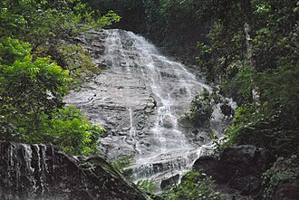

GEOLOGY

The hills of Sikkim mainly consist of gneiss and schist which weather
to produce generally poor and shallow brown clay soils. The soil is coarse,
with large concentrations of iron oxide; it ranges from neutral to acidic
and is lacking in organic and mineral nutrients. This type of soil tends
to support evergreen and deciduous forests.
The rock consists of phyllites and schists,
and is highly susceptible to weathering and erosion.
This, combined with the state's heavy rainfall,
causes extensive soil erosion and the loss of soil nutrients through leaching.
As a result, landslides are frequent, often isolating rural towns
and villages from the major urban centres.